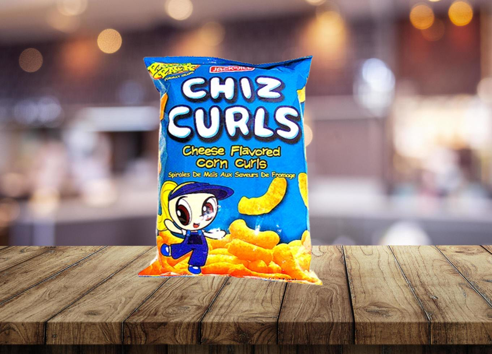
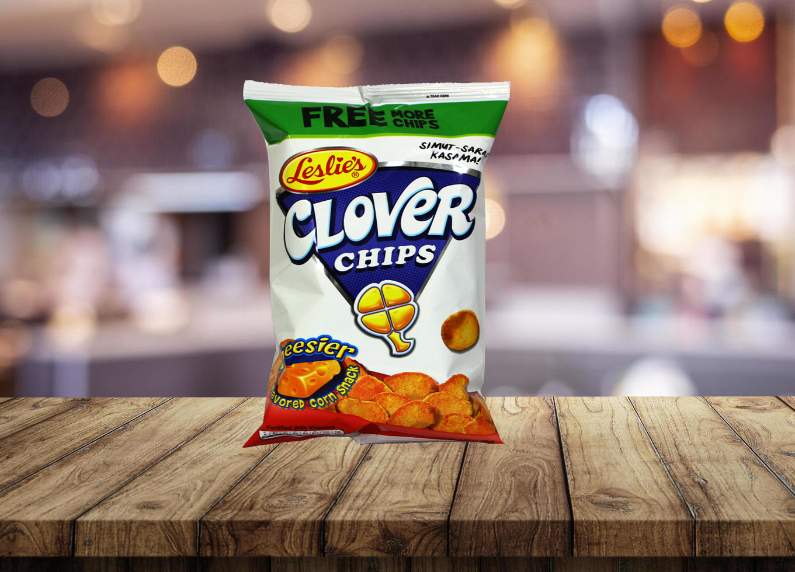
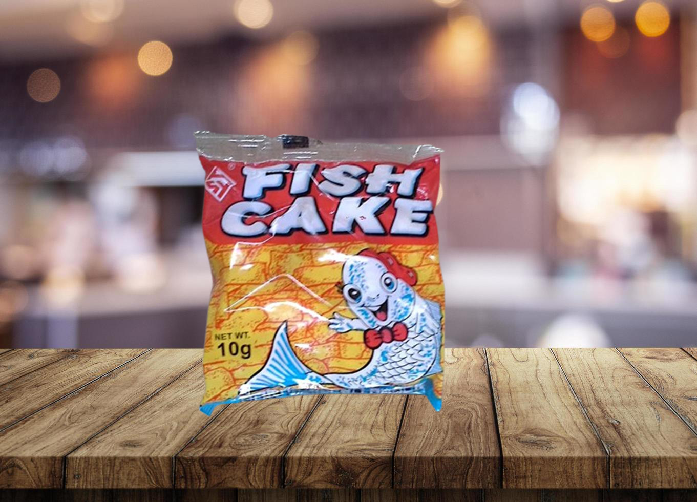
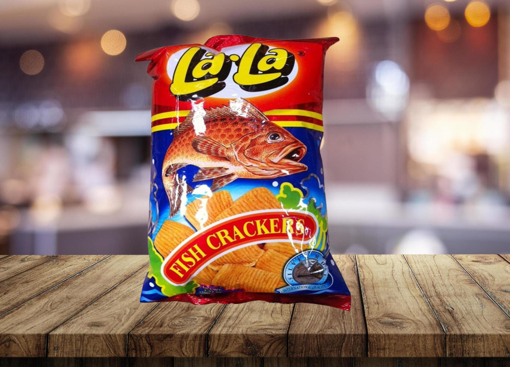
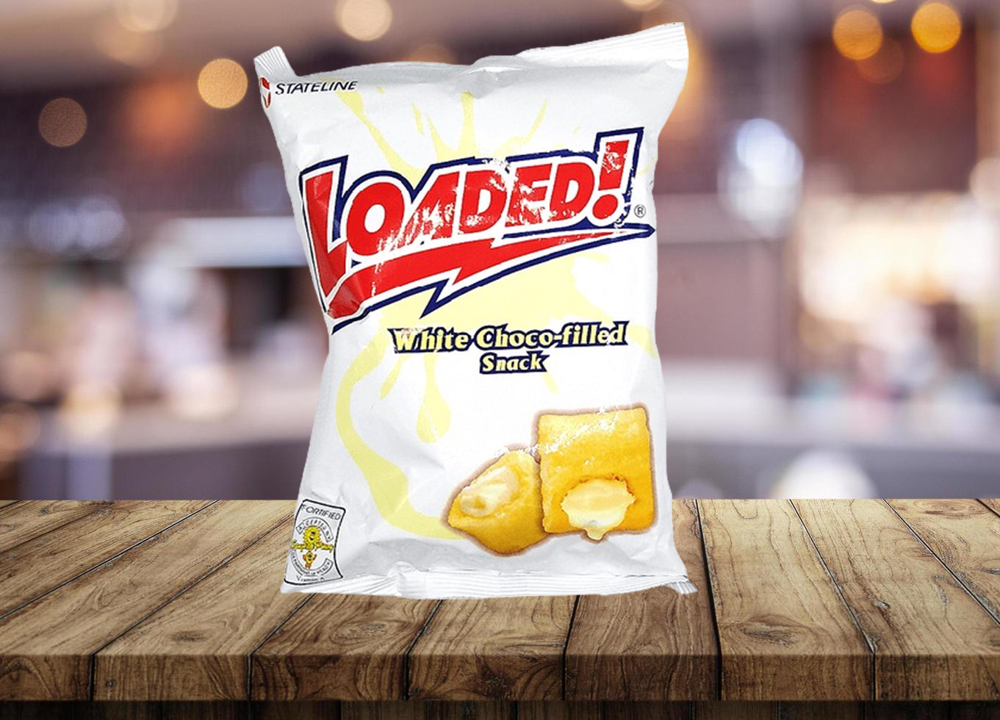
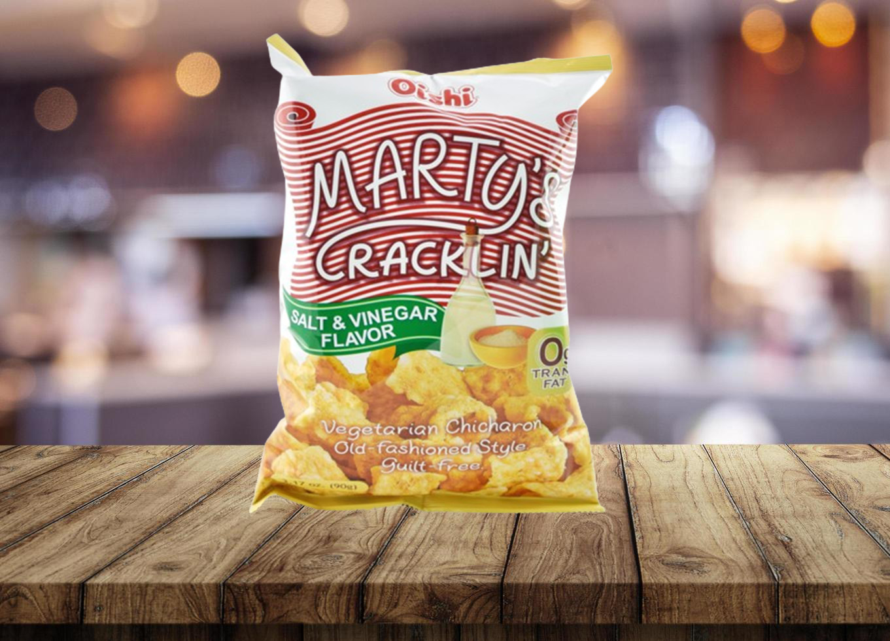
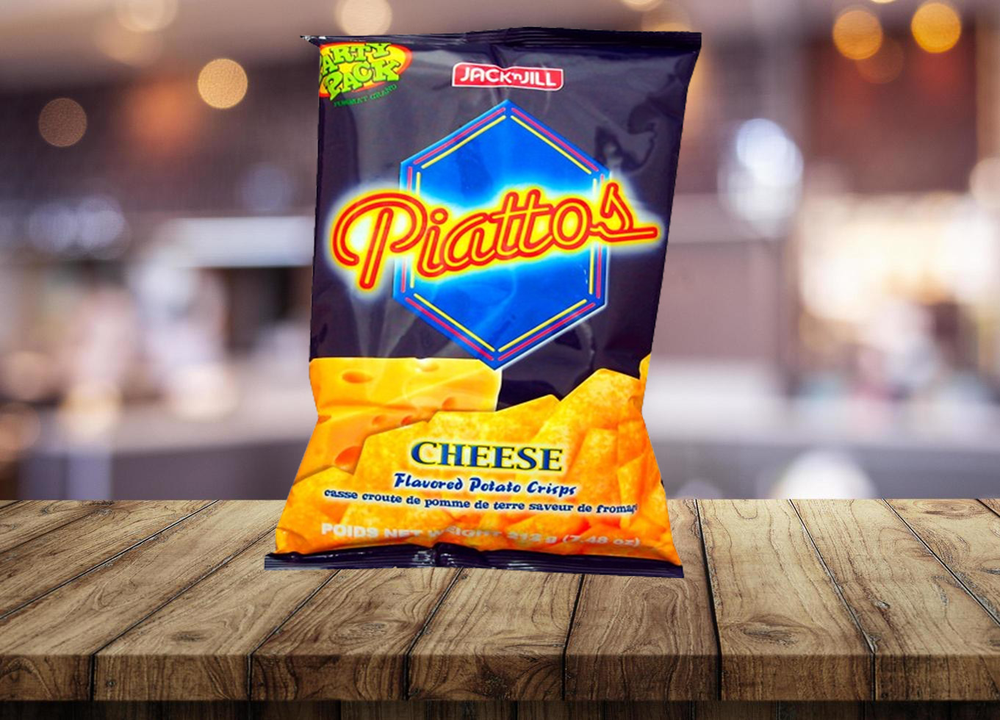
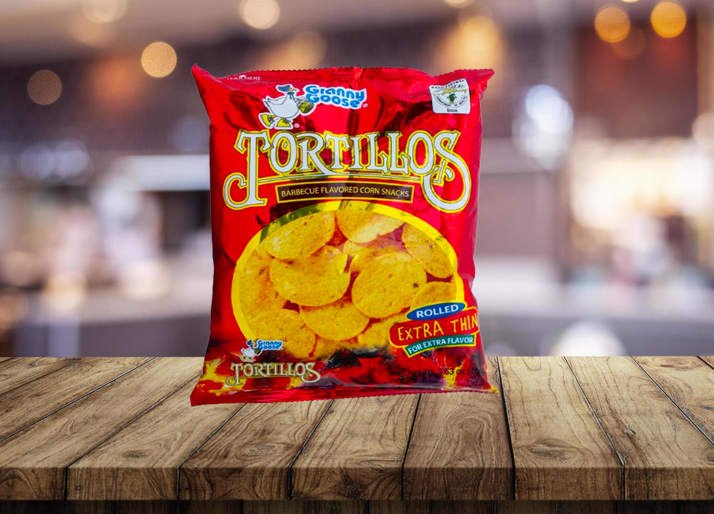

chippy

chiz curls

clover

fish cake

lala

loaded

Martys

Mr Chips

Piattos

Tortillos

V Cut
chippy
- Every Filipino is familiar with the original CHIPPY, recognizable by its distinctive red packaging. These crunchy corn chips were likely barbecue-flavored, evoking nostalgia for many.
- In recent decades, Jack n Jill (Universal Robina Corporation) has introduced various flavor variants of CHIPPY, including Chili & Cheese in blue packs and Garlic & Vinegar in green packs.
- The ingredients for the BBQ variant include corn, vegetable oil, and a blend of barbecue flavorings such as yeast, MSG, salt, sugar, spices, maltodextrin, hydrolyzed soy and corn proteins, tricalcium phosphate, rusk powder, natural flavors, mustard seed, silicon dioxide, caramel color, and artificial flavors. Additionally, iodized salt, monosodium glutamate, onion powder, garlic powder, ferrous sulfate, pepper, and antioxidants (butylated hydroxyanisole, butylated hydroxytoluene, propyl gallate) are listed.
- The allergen statement indicates that CHIPPY contains soy, wheat, and mustard ingredients.
Mr Chips
- Triangular shaped corn chips loaded with mucho nacho cheese that spell a whole lot of fun and a whole lot of goodness. You just don't bite your mr. chips chip. You go all out and gobble them all up.
V cut
- Introducing Jack 'n Jill Vcut Potato Chips in Spicy Barbecue Flavor, the ultimate snack for spice enthusiasts. Crafted from the finest potatoes and cooked to crispy perfection, these chips offer a satisfying crunch with every bite. The spicy barbecue flavor features a tantalizing blend of spices that will awaken your taste buds. Whether as a standout addition to party platters or a tasty snack during sports games, these chips are sure to impress. Try Jack 'n Jill Vcut Potato Chips in Spicy Barbecue today and savor the fiery and tangy flavors.